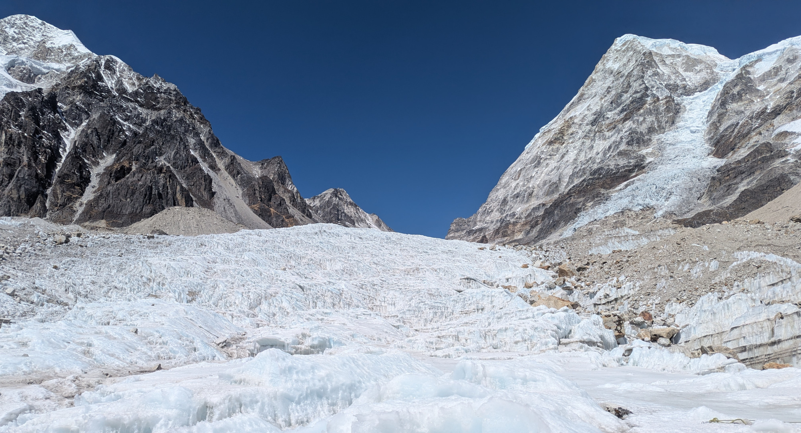

Ice Craft and Height Gain - BMC Part 3¶
This section will focus on the ice craft training and the height gain exercises.
I will share my experiences learning to use crampons and ice axes, practicing self-arrest, and ascending to higher altitudes.
Overview¶
This is the third phase of the training and hardest and the most anticipated part of the whole training according to me. This phase involved learning about the techniques that mountaineers use to climb on hard-ice and glaciers. We were taught how to use snow-shoes, crampons and ice-axes. We were also taught how to perform self-arrest and group-arrest during a glacier traverse.
The best part was waking up to see the sun-rays hit the Kabru Massif behind the basecamp. Here is a picture. You can see the temple at the basecamp in the lower-left corner.
Equipment distribution¶
We were given two sets of equipment, just like at the HMI campus. One was central equipment which was meant to be shared with the rope and personal equipment which was for personal use.
For central equipment our rope got a dynamic rope, 6 ice-screws and some locking carabiners. For personal equipment we were given a pair of snow-boots (Scarpa boots), Crampons and a single ice-axe.
After this equipment was handed over, we had a brief session where we were asked to put on our boots and check them for any damage etc. The real training would begin shortly after.
Snow Boot training¶
For this section we assembled in an empty field and we were taught how to correctly put on the snow boots and the crampons. It was quite technical in the beginning as getting used to how tight the crampons are supposed to be took some practice. We practiced taking our crampons on and off multiple times. The idea was to get this mechanism drilled very deeply into our heads as the next phase of the training which would happen on the glacier would rely heavily on this skill.
After we put on the crampons, we did some walking, running and jumping drills to get used to moving with the boots and crampons. It was more tiring than it looked. It had not snowed at all so we were doing this over a dirt land which added to the difficulty. We were asked to keep wearing the boots for the rest of the day so that we could get used to the weight and the mechanics of the boot.
After this we were taught the various ice-climbing techniques like how to correctly use the front-points of your crampons and how to use an ice-axe. We would practice these techniques on the glacier from the next day.
Hiking to Rathong Glacier¶
For Glacier training we were going to the Rathong Glacier. It was a considerable walk from the Basecamp. On the first day, it took us about 2 hours just to reach the training area. The walk was very difficult on the first day. We would soon get accustomed to this. Once we reached the glacier, most of our central equipment were used to set up permanent anchors and rappel stations on the glacier wall. We would visit this same place for the next 3 days.
Here are some pictures from the Glacier.

Crampon and Ice-Axe Training¶
On the first day of the training we spent most of our time practicing climbing by only using the front points of our crampons. Kicking the crampons into the ice and then climbing onto them without losing balance etc was very hard. It took a lot of patience and practice to get it right. I discovered that my shoes were getting undone and figured out a better way of fastening them so that they would remain snug throughout the session. Walking with these boots was the most challenging part. I was extremely impressed with how effortless the instructors made it seem. Its almost as if they are used to this by now :P (they were).
On the following days we did progressively advanced techniques all of which relied on some mastery of Front-Pointing. We learned how to climb with one ice-axe and then we climbed with two ice-axes.
Here is a picture of myself wearing all the ice-climbing gear (without the ice-axe)
Jumar training¶
We learnt two techniques for using the Jumar; the double-Jumar technique as well as the single-jumar technique used for climbing a fixed rope. We practiced the double-Jumar at the basecamp itself and we practiced the fixed rope climbing at the glacier.
This was actually fun and not too complicated. Getting used to the Jumar on a ledge or an overhang was the most challenging part of the whole exercise.
We were also taught how to fix a fixed-rope. This was the most interesting part as it was a form of lead climbing and it needed significant strength. This was the first time was saw an ice-screw being fixed.
For the double-Jumar technique we were first taught how to fix the Jumar to our harness and how to build a personal anchor system. Post this we were practicing climbing on 8 routes that were setup at the basecamp. We would take turns to climb these routes and rappel down from the other side.
The instructors highlighted the fact that most climbing on established routes these days involved using a Jumar to ascend on a fixed-rope. They said that if we do on any expedition, and were NOT the ones fixing the ropes, then most likely we will be using a Jumar to ascend.
Here is a photo of us climbing on the ice-wall with Jumar and fixed-ropes.
Making an Anchor¶
We learnt how to make anchors in the snow using objects like a a snow-bar and a deadman/deadboy. Apart from this we also learnt how to make an anchor using just snow itself (a snow bollard). The practical part of this training involved fixing an anchor and then hanging off of it to test if it could handle all that weight.
After this we built a 3-point anchor using ice-screws. This was the most fun. I've ALWAYS wanted to fix an ice-screw and here I was actually doing it. I was very very excited.
Glaciers, Avalanches, Self-Arrest and Group-Arrest Practice¶
We had a detailed class on Glaciers and Avalanches. Some techniques used to minimize risk during a glacier walk were discussed. After this we focused on the self-arrest and group-arrest techniques.
The idea is that since you are always roped up with your team during a glacier walk, if one person of the team slips and falls into a crevasse, then the rest of the group can perform what is known as a group arrest. It involves digging the pick of the ice-axe into the snow and using the foot / front-points to dig into the snow. This can create enough friction to stop the group / self from sliding.
The idea of a self-arrest is also the same, you perform the same action and try to arrest your slide. Obviously this does not work if you fall into a crevasse. This only works if you slide on a snow-field / glacier.
Since the course did not see a lot of snow, we had to practice this on a very steep grassy patch. It was fun either way. However snow would have added to the fun.
Climbing Test¶
On the last day of the glacier training, we had a surprise climbing and belaying test. This was indeed a very big surprise. The test was fairly simple, students would have to report to a test-station in groups of 2. Each of them would take turns in belaying the other person and climbing the ice-wall using 2 ice-axes.
As the end of the course was near, this was good checkpoint I believe.
Long Rappel¶
One day we walked up to the base of the Kabru Dome Glacier where the HMI advanced BaseCamp is present and we rappelled on a 100 feet wall (check height todo). This was a very large wall and easily the longest rappel we did. The start was on top of a large cliff that we had to walk upto. We were advised to keep our backpacks on so that if we were to hit the wall from behind, then the bag would act as a piece of protection.
Climbing to the rappel station was exciting; we walked past a sacred lake that was situated just below the cliff from which we were rappelling.
The rappel was great. It took some time to get used to the height, but after that it was a smooth sail below.
Once we were back on the ground, we spent a sometime taking photographs etc.
Crevasse rescue technique¶
This was fairly technical and fun. We were taught how to build a C-pulley and a Z-Pulley technique. We were also taught the proper communication technique to be used in such a situation. It was all fairly technical / process oriented, which was very surprising for me.
We had a practice session on the glacier where we took turns being the victim as well as building the pulley systems.
The mechanical advantage of the Z-pulley system really shines when you actually try to pull a victim out of a drop.
TT and suspension traverse¶
We were not taught how to build a TT or a suspension traverse. We were just shown techniques that are used to traverse across these. The instructors fixed the ropes and we merely crossed them.
Even though it was fun, I would have liked to learn how to build the bases for traversing.
Height Gain (Climb to Mt. Renok)¶
This was the highlight of our course. At the end of all the training at the basecamp, we had one last obstacle for us. This involved climbing Mt. Renok (5000 m).
We started from the basecamp at 7 and reached the base of the mountain by 9. We had a fresh layer of snow (about an inch) which was just enough to make the hike dangerous. By this time the weather at the basecamp had deteriorated considerably and we had constant fog and mild snowfall. We persevered on.
The instructors had already fixed the ropes that we would be clipping into. The entire climb was easy. Our group used a difficult route to reach the top. This made it more exciting. The weather today was very bad with visibility only upto a few meters. It started snowing as soon as we started the climb to the peak.
Here is a photo from the climb
The view fro the top was spoiled because of the bad weather. This was disappointing as on a clear day, you can see the entire valley from this vantage point.
We spent sometime at the peak taking pictures and chanting praises for the motherland and for the institute. I am not a person who loves institutions easily; so I find these outward expression of love for the country and for the institute very weird; But I played along with the rest of the group. Regardless of the events, the moment was a very happy one indeed.
After this all we had left was returning to HMI and graduation